お店の歌詞デザイン案(全40案)
応援ソングの歌詞を、今のお店に少しだけ足した見本です。1案につき入れ方は1つ。1〜20はトップの1画面目、21〜40は下の段も使っています。気になる番号を言ってください。
パステル= 配色も少し明るくした案
題名の右上に、斜めに貼ったシールを1枚「かわいさは仕様ですっ☆」
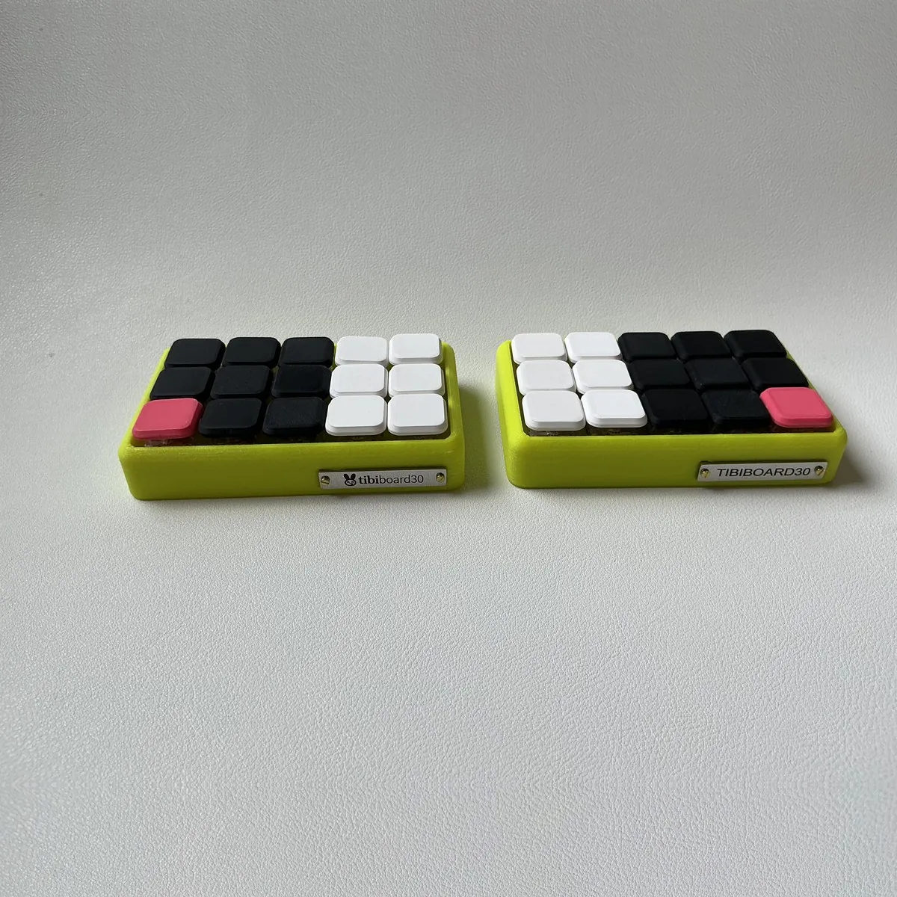
✨ガラス一番上の帯の中を、歌詞がゆっくり横に流れる
ばつべーの左に、2つ目のふきだし「手のひらちょこん♪」
左に、昔のパソコンの小さな窓「しようしょ.txt」。中に「かわいさは仕様ですっ☆」
すりガラスの入口と棚のカードの角に、小さなシールを3枚
ピンクのレンガの壁に、落書き風の手書き文字「手のひらいっぱい かわいいね♡」
キャッチの下に、星とハートの飾りと一緒に「ちびちび☆ちびボード」
帯をピンクとミントのパステルに。帯の右下に札を下げる「♪ ぽちぽち ピコピコ」パステル
下の公式ソングの段。見出しの上にリボン「♪ 手のひらちょこん ♪」
ガラスの壁にパステルのもやをかけ、キャッチの下に白い札「手のひらいっぱい かわいいね」パステル
ばつべーの段の下の茶色い線を、パステルピンクの歌詞のリボンに「ちびボード ♪」パステル
キャッチの下に、左右に分かれたキーキャップで「ぽちぽち|ピコピコ」
右側に、マスキングテープで貼った付箋「30個のキーで世界征服」
右下の角に、丸いはんこ「ちびちび☆ちびボード」
右のはしに、縦書きの1行「手のひらいっぱい かわいいね」
キャッチの下に、カラオケの字幕のように色が変わる「30個のキーで世界征服」
帯をラベンダーとピンクに。帯から三角の旗を下げて1文字ずつ「ちびちび☆ちびボード」パステル
ばつべーの両わきに、パステルのすける大きな文字「ちび ちび☆」。下の線もミントにパステル
左側に、キーボードの写真のチェキと手書きの一言「手のひらちょこん」
いちばん控えめ。うさぎの一言の下に、引用の1行だけ「手のひらいっぱい かわいいね」
21〜40 ― 1〜20とちがう置き場所・ちがう形
ロゴの下に、ペンで書いたような手書きの1行と波線「手のひらちょこん」。帯はクリームとピンクにパステル
ばつべーの段の左上の角に、斜めのたすき「ぽちぽち ピコピコ」。下の茶色い線はラズベリーピンクにパステル
ばつべーの段の左下に、動画の曲名のようなテロップ「♪ ちびちび☆ちびボード」
棚とおしらせの間のレンガの壁に、ピンクのネオンサイン「手のひらいっぱい かわいいね」(下の段)
ばつべーの頭の上に、キーボードで打っているように1文字ずつ出る「30個のキーで世界征服」
公式ソングの段の背景に、大きな薄い文字「ちびちび☆ちびボード」(下の段)
公式ソングの動画の右下に、CDの歌詞カードのような小さな紙(3行)(下の段)
公式ソングの動画の左下に、ライブのチケットの半券「かわいさは仕様ですっ☆」(下の段)
おしらせの板の上から小さなばつべーがのぞいて、ひとこと「手のひらちょこん」(下の段)
- 2026-08-23eスポーツチーム「FIREWORKS」(新潟)と スポンサーシップを むすんだよ🎆
- 2026-08-15おみせ、オープンしたよ
おしらせの板の一番下に、点線で区切った1行「♪ 30個のキーで世界征服」。板はピンク寄りのすりガラスに(下の段)パステル
- 2026-08-23eスポーツチーム「FIREWORKS」(新潟)と スポンサーシップを むすんだよ🎆
- 2026-08-15おみせ、オープンしたよ
棚のカードの値段の下に、お店のタグと同じ形の札「♪ 手のひらいっぱい かわいいね」(下の段)
棚の上に、雑誌から切り抜いた紙を並べたような文字「ちびちび☆ちびボード」(下の段)
写真がまだの棚のカードの灰色の枠の中に、うすい一言「ぽちぽち ピコピコ」(下の段)
ページの一番下の帯に1行足す「♪ かわいさは仕様ですっ☆」。帯はラベンダーに(一番下)パステル
X @tibiboard / 技適 211-220207 / 仕様・注意がき・特定商取引法に基づく表記♪ かわいさは仕様ですっ☆ 作詞: 過労
一番下の帯の上の壁に、ネジで留めたホーローの看板「ぽちぽち ピコピコ」。レンガは白を多めにして明るく(一番下)パステル
X @tibiboard / 技適 211-220207 / 仕様・注意がき・特定商取引法に基づく表記
ばつべーを押すと出る大きな「ちびボード」の文字の前に、小さく「ちびちび☆」を足して歌詞にする
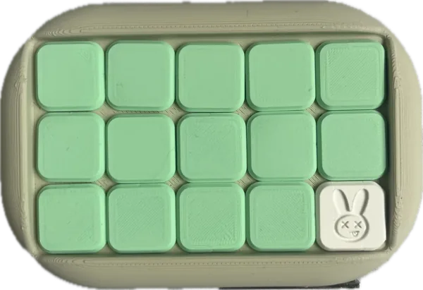
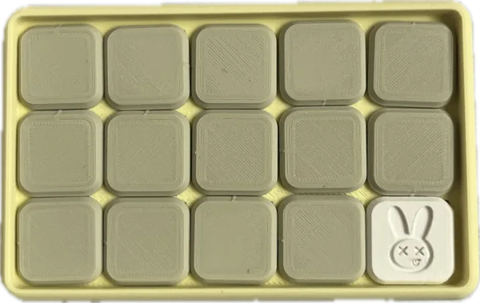
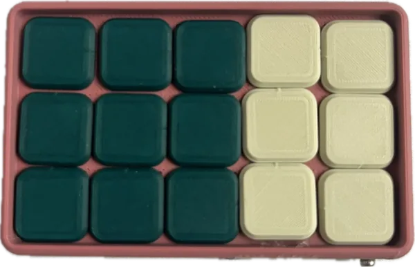
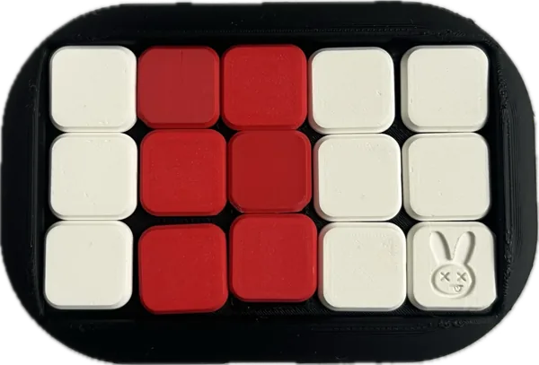
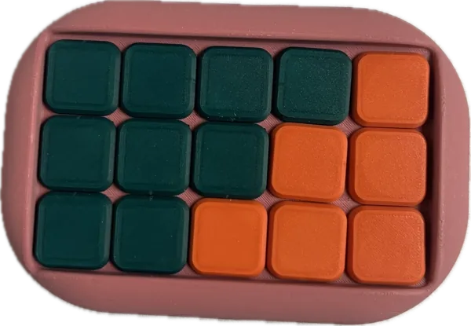
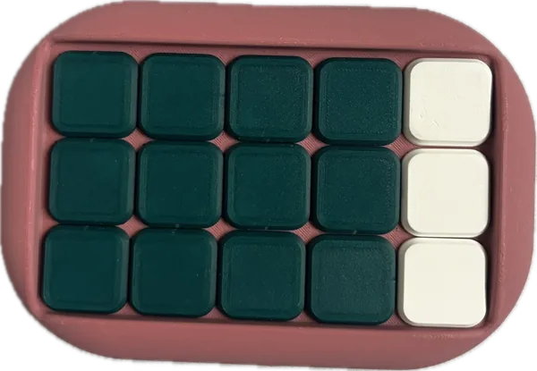
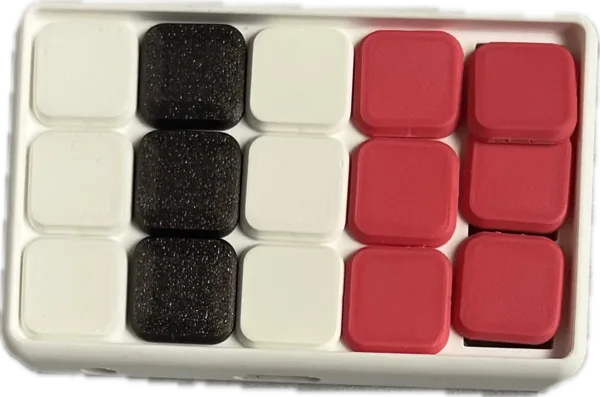
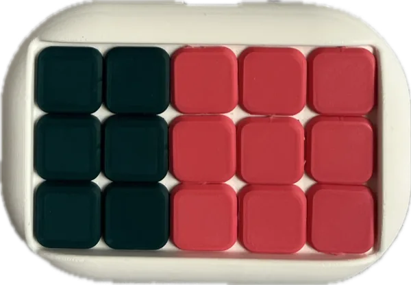
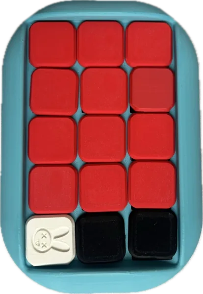
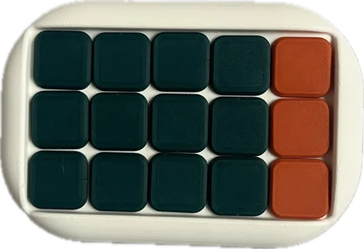
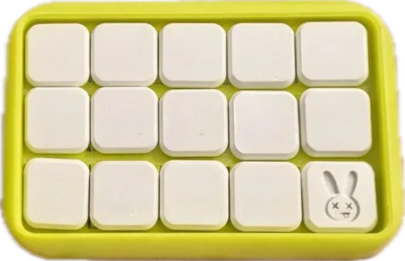
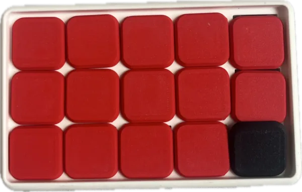
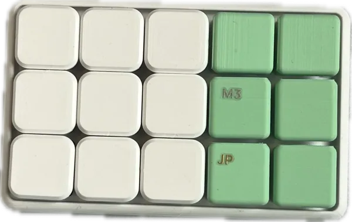
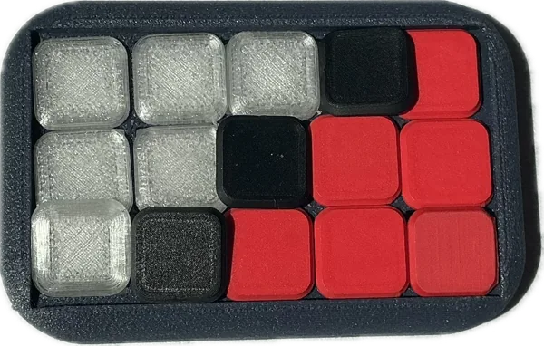
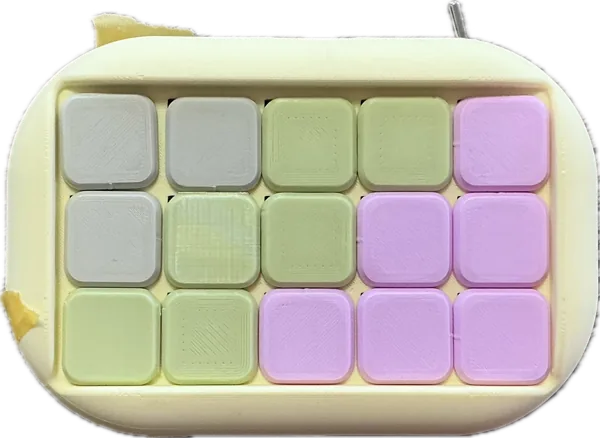
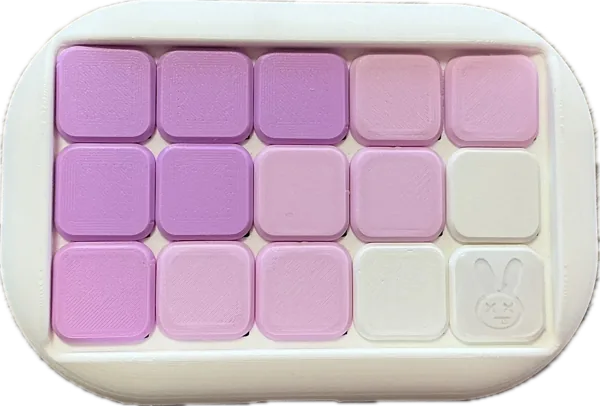
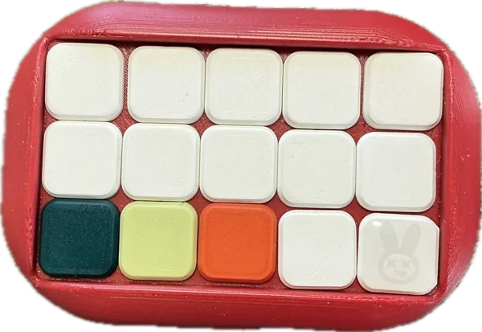
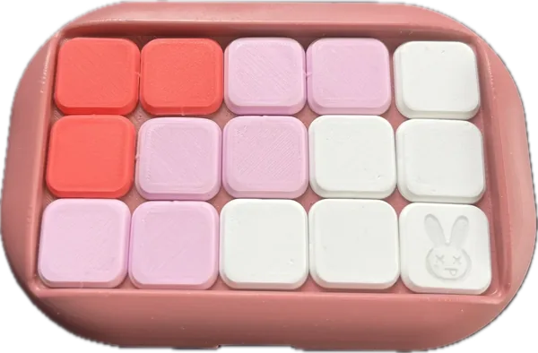
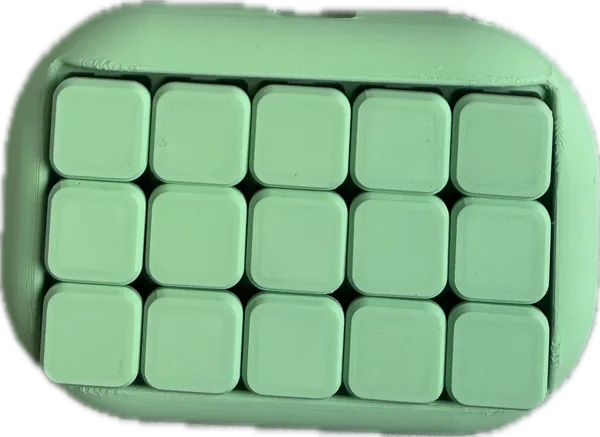
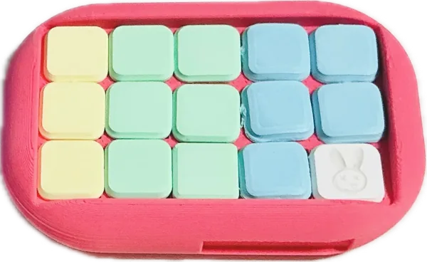
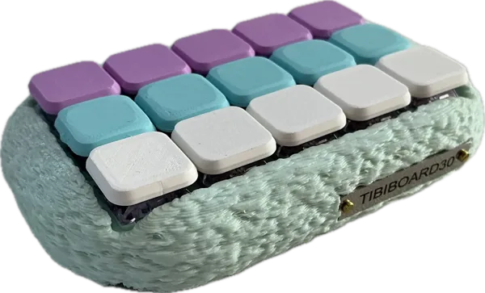
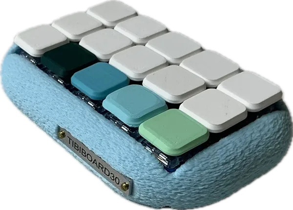
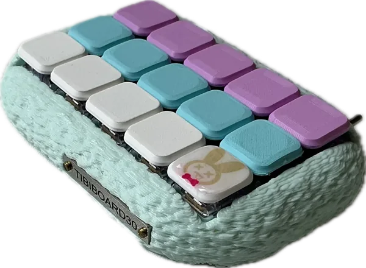
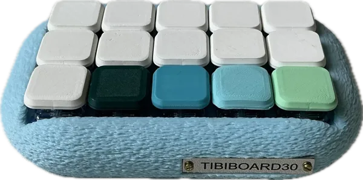
棚のカードのすりガラスに、すける細かい歌詞の模様「ちびボード ♪」(下の段)
ばつべーの段の右上に、白いふちどりの切り文字(台紙なし)「かわいさは仕様ですっ☆」
キャッチの上に、ふりがなのように歌詞「ちびちび☆ちびボード」
ばつべーの段の一番下に、ピンクの五線譜と「♪ 手のひらちょこん ♪」